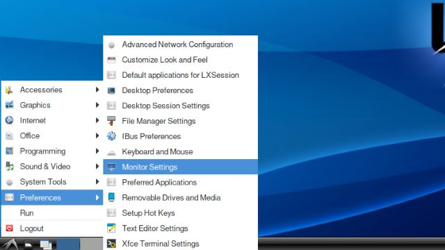
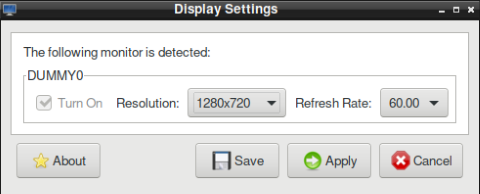

KNEO Pi Configuration via the Command Line¶
This guide provides instructions for configuring various aspects of the KNEO Pi development kit via the command line. The configurations allow users to adjust the system settings, network configurations, and advanced options as per their requirements.
System Configuration¶
Switch to the 'root' account before performing system-level configurations
If you are logged in remotely as alarm, use the command: su - root
Check System Version¶
To check the system version of your KNEO Pi, use the following command
This command displays the version information of the KNEO Pi OS installed on your device.Screen Resolution¶
Configure the system's screen resolution to match the display requirements.
By default, the KNEO Pi is set to 1280x720 resolution. This setting is balanced for performance to save computing resources, ensuring that the system can run applications smoothly without excessive CPU and memory usage.
Setting the resolution to 1920x1080 will provide higher display quality, but it comes with a trade-off. It will increase the CPU load by approximately 10% and also consume more DDR memory. This may impact the overall system performance, especially on resource-intensive tasks.
Refer to the images below to configure the monitor resolution:

Then, set Resolution with the desired resolution (e.g., 1920x1080 or 1280x720).

MIPI DSI¶
Disabled by default
KNEO Pi supports the Raspberry Pi Touch Display via the MIPI DSI interface.
Refer to the MIPI Display section for connection instructions.
By default, the LCD display is disabled to conserve system resources.
You can enable LCD display with a one-time setup using the commands below:
systemctl enable x-server-lcd.service
systemctl enable x11vnc-lcd.service
systemctl enable local-display-lcd.service
reboot
After rebooting, you should see a separate desktop environment on the LCD.
Info
- Multi-touch support: A two-finger tap acts as a right-click.
- Both HDMI and LCD displays share the same input devices (keyboard and mouse) by default.
How to Use LCD Display Only?
To use only the LCD display and disable HDMI output:
Expand SD Card Space¶
Expand the filesystem to utilize the entire available space on the SD card.
To save time during the SD card programming process, the system image is created with a smaller size than the actual capacity of the SD card, typically less than 16GB. However, if your SD card has a capacity larger than 16GB, the unused space will not be available for use by the system until it is expanded.
Command:
Warning
Expanding the partition will erase data if not done correctly. Ensure to back up important data before proceeding.
Configure Timezone or Date/Time¶
Set the correct timezone or synchronize system time with an NTP server.
Command to configure timezone:
Replace<Region/City> with your local timezone (e.g., Asia/Taipei).
Check for available zones:
Command to configure date/time:
# Configure date only
$ timedatectl set-time "2016-11-12"
# Configure time only
$ timedatectl set-time "18:10:40"
# Configure both date and time
$ timedatectl set-time "2016-11-12 18:10:40"
Warning
The KNEO Pi does not have a Real-Time Clock (RTC) module to maintain the system clock when powered off.
Ensure the device has network access to synchronize the time using NTP, or manually configure the clock after each reboot.
Configure Hostname¶
Change the system's hostname to a custom name.
Replace<new_hostname> with your desired hostname.
General naming rules
Allowed Characters
- Lowercase letters (a-z)
- Digits (0-9)
- Hyphens (-) as separators (but not at the beginning or end of the hostname)
Invalid Characters
- Uppercase letters (e.g., MyHost is invalid)
- Special characters, such as: . _ (underscore) . . (dot, except in fully qualified domain names, like hostname.domain.com) . Spaces
Length Restrictions
- Between 1 and 63 characters for a single hostname label.
- The full hostname, including any domain (e.g., hostname.example.com), should not exceed 253 characters.
Changing the hostname may affect network connectivity
See more Resolve kneopi.local with mDNS for further information
Networking Configuration¶
DHCP Enabled by default
The KNEO Pi has built-in Ethernet support, while Wi-Fi requires an external USB Wi-Fi adapter. Networking is managed by NetworkManager, allowing users to configure either Ethernet or Wi-Fi with a static IP or DHCP. Follow the steps below to set up your network connection.
Assign Static IP or DHCP¶
-
View Available Connections To check the status of your current connections or available interfaces:
-
Assign a Static IP To configure a static IP for an interface (e.g., Ethernet or Wi-Fi):
Replace$ nmcli con mod eth0 ipv4.addresses <static-ip>/<subnet-mask> $ nmcli con mod eth0 ipv4.gateway <gateway-ip> $ nmcli con mod eth0 ipv4.dns "<dns1>,<dns2>" $ nmcli con mod eth0 ipv4.method manualeth0with the NAME of your connection, e.g.wlan0for Wi-Fi connection
Replace<static-ip>,<subnet-mask>,<gateway-ip>,<dns>according to your environmentFor example (configure everything together)
-
Enable DHCP (Enabled by default)
-
Connect to Wi-Fi (optional)
If using a USB Wi-Fi adapter, ensure it is recognized by the system, then connect to a Wi-Fi network:
Verified USB Wi-Fi adapters
- tp-link Archer T2UB Nano, rtl8821cu
- tp-link Archer T3U Nano, rtl8822bu
- tp-link Archer T2U Nano, rtl8812au
Once connected, confirm the assigned IP address using:
-
Disconnect and reconnect the networks to make the changes effective
Replaceeth0with the NAME of your connection, e.g.wlan0for Wi-Fi connection
Advanced Configuration¶
Configure MAC Address¶
Set a custom MAC address for network interfaces permanently.
<new_mac> with the desired MAC address (e.g., 00:14:22:01:23:45)
Apply the changes:
OR reboot:
Warning
- Changing the MAC address can affect network access if there are network policies based on MAC filtering.
- A reboot is required.
Enable/Disable ZRAM as Swap¶
Enabled by default
Enable or disable the use of ZRAM for compressed swap space to gain larger memory space. Command to enable/disable ZRAM:
Warning
- Enabling ZRAM can help performance on systems with limited RAM but may affect overall system stability if not properly configured.
- A reboot is required.
Enable/Disable Dummy UDC USB Device for Proprietary NPU Core¶
Enabled by default
Enable or disable the dummy USB device used for the proprietary NPU core.
Command to enable/disable:
Warning
- This feature is specific to certain hardware configurations. Misusing may cause the NPU to become unresponsive.
- A reboot is required.
Configure USB over Ethernet¶
Disabled by default
Enable or disable USB over Ethernet functionality.
Command:
Warning
- Enabling USB over Ethernet will affect USB network traffic, so ensure this feature is needed for your use case.
- Setting the USB Port you use as Device Mode is required.
- A reboot is required.
Configure USB2.0/USB 3.0 Port as Device Mode¶
Host Mode by default
The USB2.0/USB 3.0 port on the KNEO Pi can be configured to operate in device mode, allowing the KNEO Pi to function as a peripheral device when connected to a host system. Configure the USB2.0/USB 3.0 port to function in device mode.
[root@kneo-pi ~]# cd /mnt/flash/kneo_pi
[root@kneo-pi kneo_pi]# sh set_usb_mode.sh
[ 1011.105228] loop0: detected capacity change from 0 to 124805120
[ 1011.113349] FAT-fs (loop0): Volume was not properly unmounted. Some data may be corrupt. Please run fsck.
Please enter option for USB U2 port(default: 0)
[0] U2 port: HOST mode
[1] U2 port: device (peripheral) mode
1
Please enter option for USB U3 port(default: 0)
[0] U3 port: HOST mode
[1] U3 port: device (peripheral) mode
1
New U2_mode: device
New U3_mode: device
updated config ok, but still need to reboot system to apply new setting for Linux kernel
Warning
- Switching to device mode may interfere with other USB peripherals connected to the system.
- A reboot is required.
Restricted Configurations¶
- Keyboard Layout (US Layout Only)